2019年のえべっさんは宵えびすだよ！ [梅吉]
ちょっと時間が空いてしまいましたが先週10日のお話です。
1月10日はえびす神社の例祭「十日戎」通称「えべっさん」でした。
全国的に有名なのは兵庫 西宮神社のえべっさん。
朝の開門と同時に境内を走り抜け一番乗りが福男となるあの神社です。
大阪では今宮戎神社のえべっさん。せまーい路地みたいなところにある神社に
三日間で（9日：宵えびす 10日：本えびす 11日：残り福）100万人もの人出があるそうですよ。
我が家は毎年住吉大社のえべっさんに行ってます。
今年は9日の宵えびすに行ってきましたよ。
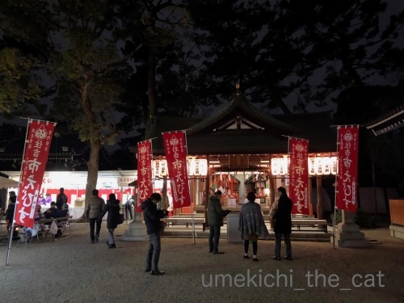
今宮戎はヘリコプターの中継が出て上空から混雑ぶりがリポートされるんですが
すみよっさんだとこんな感じ。余裕でお参り出来ます。
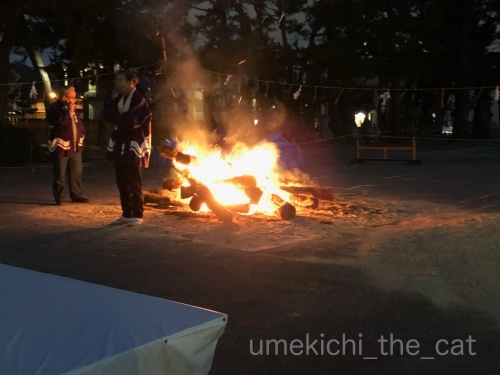
この日は朝から祈祷木のお焚き上げもあったのでその火がまだありました。
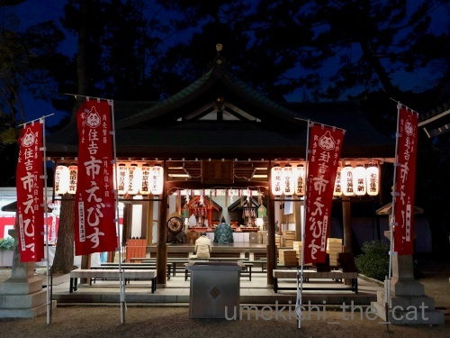
御祈祷をお願いする方も。
このお祭りのメインは福笹をいただいて「縁起物」といわれるチャームの様なものを付けてもらうこと。
我が家も福笹を授与していただき縁起物をつけてもらいました。
福笹にはおっちゃんたちが鐘を打ち鳴らしながら景気付けをしてくれました＾＾
（この景気付け、正式名称は何て言うんだろう・・・
この説明じゃ状況が良くわからないですよね。動画を探してみたのですが見つけられなかった・・・）
縁起物をつけてくれたのは去年と同じ福おばちゃんw
今年もやっぱりおまけしてくれました![[手（チョキ）]](https://blog.ss-blog.jp/_images_e/87.gif)
ビバ！おばちゃん同士のシンパシー0(≧▽≦)0
そして我が家の福笹の総仕上げは
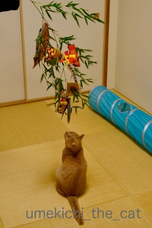
でっかい猫の縁起物！！
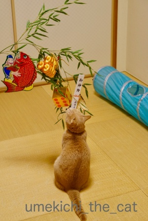
我が家の招き猫さん、今年はどっしり腰を据えて福を招いてくださる様です＾＾
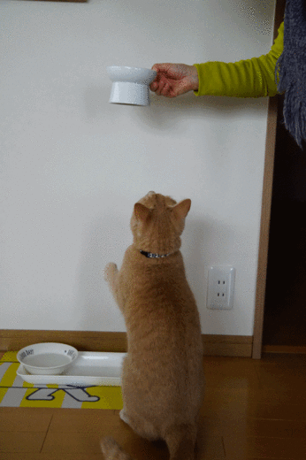
招き猫ポーズはこちらで＾＾
招くというより引き寄せてますねw
以下私の覚書。
えびす神社にはヒルコ神系と事代主系の二系統あり。
（詳しいことはWikiにて）
ヒルコ神系の総本社が兵庫西宮市の西宮神社、
事代主系の総本社が島根松江市の美保神社。
 ↑ガブッと一押し↑
↑ガブッと一押し↑
昼にいらっしゃることはあっても夜の住吉大社の様子は（お祭り時は別として）
ご存じない方も多いのではないでしょうか。
宵えびすの帰りにおっとに撮影してもらいました。
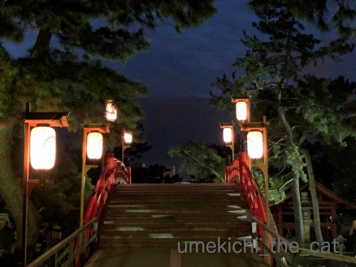
人のいない太鼓橋はこんな感じ。
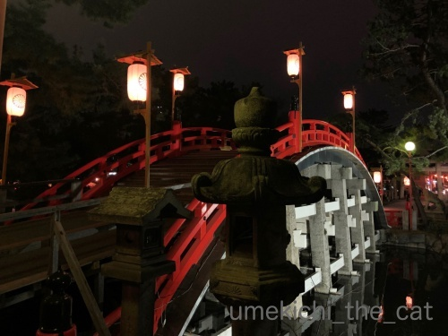
誰もいないので撮り放題。別アングルで。
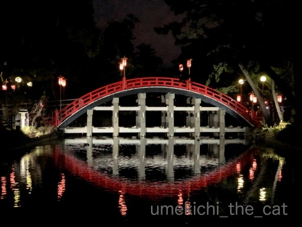
天と地を結ぶ虹を模しているのでこんなに反っているんですって。
水面に映ると幻想的です。
夜の太鼓橋は関西夜景百選にも選ばれているとのこと。
年明けなので住吉大社関係の記事が続いております。
後日もう一回登場するかな。
よろしくお付き合いくださいませm(_ _)m
1月10日はえびす神社の例祭「十日戎」通称「えべっさん」でした。
全国的に有名なのは兵庫 西宮神社のえべっさん。
朝の開門と同時に境内を走り抜け一番乗りが福男となるあの神社です。
大阪では今宮戎神社のえべっさん。せまーい路地みたいなところにある神社に
三日間で（9日：宵えびす 10日：本えびす 11日：残り福）100万人もの人出があるそうですよ。
我が家は毎年住吉大社のえべっさんに行ってます。
今年は9日の宵えびすに行ってきましたよ。
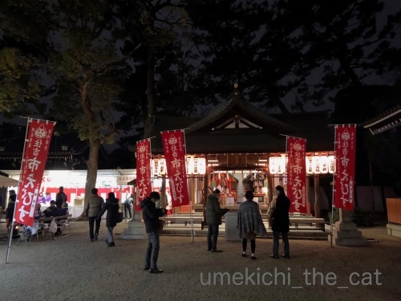
今宮戎はヘリコプターの中継が出て上空から混雑ぶりがリポートされるんですが
すみよっさんだとこんな感じ。余裕でお参り出来ます。
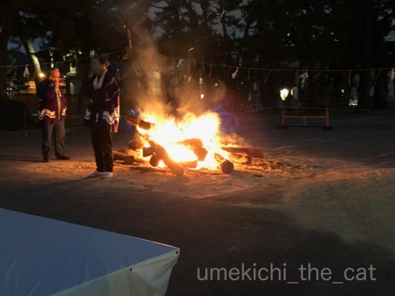
この日は朝から祈祷木のお焚き上げもあったのでその火がまだありました。
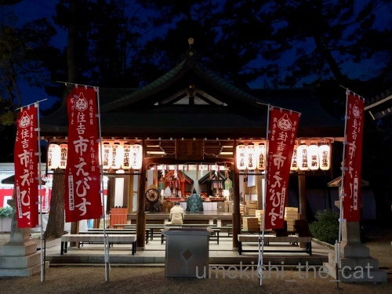
御祈祷をお願いする方も。
このお祭りのメインは福笹をいただいて「縁起物」といわれるチャームの様なものを付けてもらうこと。
我が家も福笹を授与していただき縁起物をつけてもらいました。
福笹にはおっちゃんたちが鐘を打ち鳴らしながら景気付けをしてくれました＾＾
（この景気付け、正式名称は何て言うんだろう・・・
この説明じゃ状況が良くわからないですよね。動画を探してみたのですが見つけられなかった・・・）
縁起物をつけてくれたのは去年と同じ福おばちゃんw
今年もやっぱりおまけしてくれました
ビバ！おばちゃん同士のシンパシー0(≧▽≦)0
そして我が家の福笹の総仕上げは
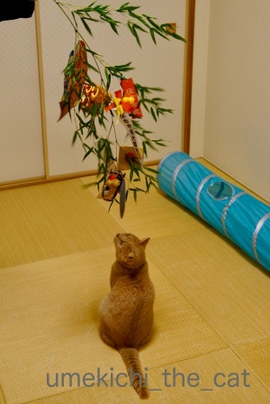
でっかい猫の縁起物！！
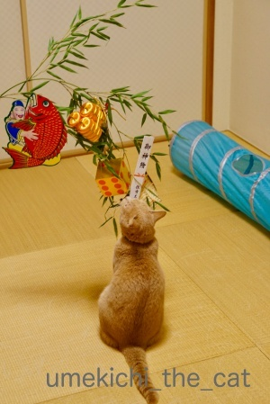
我が家の招き猫さん、今年はどっしり腰を据えて福を招いてくださる様です＾＾
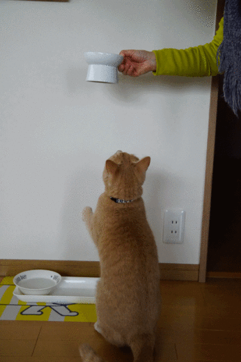
招き猫ポーズはこちらで＾＾
招くというより引き寄せてますねw
以下私の覚書。
えびす神社にはヒルコ神系と事代主系の二系統あり。
（詳しいことはWikiにて）
ヒルコ神系の総本社が兵庫西宮市の西宮神社、
事代主系の総本社が島根松江市の美保神社。
昼にいらっしゃることはあっても夜の住吉大社の様子は（お祭り時は別として）
ご存じない方も多いのではないでしょうか。
宵えびすの帰りにおっとに撮影してもらいました。
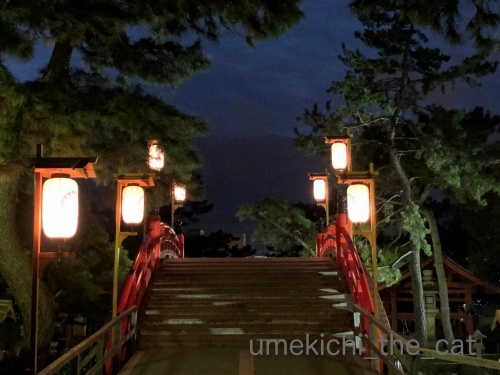
人のいない太鼓橋はこんな感じ。
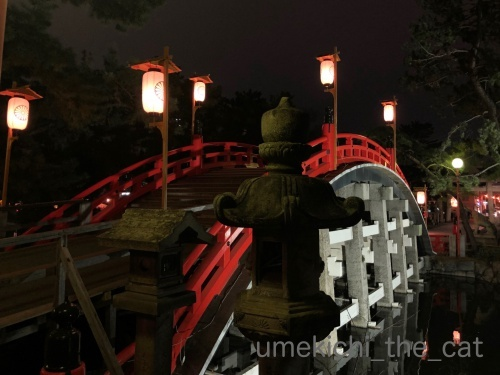
誰もいないので撮り放題。別アングルで。
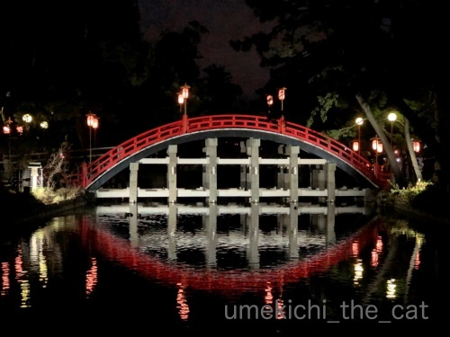
天と地を結ぶ虹を模しているのでこんなに反っているんですって。
水面に映ると幻想的です。
夜の太鼓橋は関西夜景百選にも選ばれているとのこと。
年明けなので住吉大社関係の記事が続いております。
後日もう一回登場するかな。
よろしくお付き合いくださいませm(_ _)m
2019-01-17 00:00
nice!(82)
コメント(26)

カフェオレ色の梅吉

梅吉 2023年8月10日 永眠


梅吉と出会った譲渡会

犬猫の理由なき殺処分ゼロ
妄想広告
UMEKICHI 光

爆発的に早い！
時々攻撃的！
Thanks to Mr.Boss365
爆発的に早い！
時々攻撃的！
Thanks to Mr.Boss365

太鼓橋結構な角度がありますね。夜もいい感じです。
梅吉さんの福招きも見せてもらって福のおすそ分けいただきました~。
by zombiekong (2019-01-17 01:48)
うちの招き猫も左手を使います＾＾
by ぽちの輔 (2019-01-17 06:39)
梅吉さん、ありがとう^^良いことありそうです^^
by ニコニコファイト (2019-01-17 07:13)
こういうゆったりしたえべっさん、良いですねぇ( ^ω^ )
縁起物を付けてくれる福おばちゃん、
おまけしてくれるなんて福運が上がりそう=(^.^)=
そして極め付けは梅吉さんによる
最強福運引き寄せですね♪( ´▽｀)
招くなんてまだるっこしいことしないで
がっつり引き寄せる！
うん、とっても大事ですね*\(^o^)/*
by ニッキー (2019-01-17 07:33)
夜の醸し出す雰囲気！とても素敵ですね(#^.^#)
幸せを呼ぶ招き猫♪
いるだけで幸せな気分にさせてくれる梅吉さんですね♪
by きぃ (2019-01-17 08:22)
えべつさんは関東には無い風習ですね！
梅吉さんは左利き(^^)
by ma2ma2 (2019-01-17 08:40)
去年とおんなじおばちゃん、おったんやねー(≧∀≦)
リンク記事読んで、去年のこと思い出しました。
私もやっぱり、若い娘のとこへ引き寄せられると思うしー(^_^;)
by よーちゃん (2019-01-17 08:43)
おはようございます。
住吉大社のえべっさん！！混んでなくて良い感じです。
お焚き上げ！！火を見るとなんか？安らぎます。
福笹・猫の縁起物！！梅吉君、パンチしていないのは偉いですね。
一体化成功で「福と為す」感じです。
招き猫ポーズ！！GIF画像！！やりますね！！気が付かなかった？（笑）
大きな福を頂きました。
ライティングされ水辺に浮かぶ太鼓橋、神秘的です！？(=^･ｪ･^=)
by Boss365 (2019-01-17 11:22)
住吉神社には数回行ったことがあります。
催し物の時はいかないのですが、1度は行って雰囲気を楽しみたいです。
福おばちゃんの顔を覚えていたのですね。
1年間つつがなく健康に暮らせて、福おばちゃんのお陰かもしれませんね。
オマケに福がついてきました？（笑）
梅吉さん、福を引き寄せてくれるので二重におめでたくて良いです。
錦織選手、苦戦のようです。
夫のため息が切ないです（笑）錦織選手スパッと勝利を！
by kiki (2019-01-17 12:11)
おおお！
去年と同じ福おばさんだったのですね^^
えびすというと、わたしはヒルコのほうが浮かんでしまうけど
たしかに事代主もだよね。海に関係あるし、出雲の国譲りの時に登場してるから、事代主系の総本社が島根というのも納得だわ。
わたしの次のお勉強は、少彦名命さまとアラハバキ(笑)
by リュカ (2019-01-17 13:30)
神戸の兵庫にあるえべっさんはヒルコ系みたいです。
住吉大社、人のいない太鼓橋は初めて見ました。
池に映る逆さ太鼓橋もいいですね。
なかなか夜に神社へ行くことがないので貴重な光景です。
西宮のえべっさんは門の前にまぐろが奉納されているんです。
なんかよくわかりませんが参拝客がコインを貼り付けてます。
だから海関係なんだろうなぁと思っていました。
2系統あるということでその謎が解けました。
by marimo (2019-01-17 15:22)
記事を読み進めながら、去年の福おばさんを思い出してたら
今年も同じ服おばさんから！
なんだか嬉しいのは私もシンパシー感じてる証拠かもｗ
まさしく猫は縁起物！
梅吉くんのちっちゃいお手手で、福をたくさん招いてくださいね。
引き寄せるくらいでいいでしょ(≧▽≦)
旦那様の撮った写真、美しいですね。
タイムトリップしてしまいそうです。
by emi (2019-01-17 16:44)
えべっさんと梅吉さんのW福ですね(^^)
最近、一昨日辺りから吹雪となり、お向かいの招き猫のしょうちゃんも出てこなくなりました。
今週末にでも会えると、我が家にも福が来そうな予感がするのですが・・・(^^;)
by kou (2019-01-17 18:55)
福笹の仕上げは、福猫の梅吉さんですね(*´ω｀*)♡
福を引き寄せてくれて、今年も素敵な年に
なりそうですね♪＾＾
太鼓橋、水に写って綺麗ですね～。
良いもの見せていただきました＾＾
by マーヤ (2019-01-17 20:26)
ず～っと関西ですけど夜の太鼓橋見たの初めてです！ 感動！！
えべっさん、子供の頃はカラフルな福飴を買ってもらうのが嬉しかった記憶があります♪
福おばさんのシンパシーに梅吉さんの招き猫パワーが加わったら怖いものなし、ちぃさん家は今年も安泰ですね(*^▽^*)
by ゆきち (2019-01-17 21:09)
夜の神社も幻想的でいいですね！
えびす神社に「～～系」があるなんて知りませんでした。
福猫さん、今年もたくさん福を招いてくれることでしょう。^^)
by yes_hama (2019-01-17 22:10)
鯛に小判に梅吉さん。
今年は福がいっぱい来ますね。
めでたい、めでたい＾＾
by riverwalk (2019-01-17 22:48)
夜の神社、なんだか年末の雰囲気ですね。
普段だったら真っ暗なところを開放していると
ちょっと特別感があってワクワクしちゃいます。（夜だから？^^）
水面に写った橋もきれいですね。
そして今年のネコ飾りもつけて、2019年もばっちりですね☆彡
by Ja-Kou66 (2019-01-18 00:33)
鯛で猫をツル♪縁起が良いですねｗ
by 猫毬 (2019-01-18 01:45)
えべっさんですね〜
強運を頂きました！^ ^
by KENT0mg (2019-01-18 12:43)
引きよせネコ♡ちょっと強引に福を引っ張ってくれそうですね(*^^*)
たのいもしいぜ梅吉くん!!
by palpal (2019-01-18 16:38)
おぉ、宵えびす〜♪ 夜の神社も、よい雰囲気ですね♪
こんなにいい神社なのに、空いてるんですね!!!
梅吉さんは、福の引き込み(^^)v ええ運もってきてや〜♡
by のらん (2019-01-19 11:45)
暗い時間のお寺・神社って
雰囲気があっていいですね。
お写真がきれい~。
by ふにゃいの (2019-01-19 13:53)
遅ればせながら、今年もよろしくお願いします(^_^)
縁起物にゃんこ、ほしいわ～(≧▽≦)
夜の水面に映った橋が幻想的ですてき！
by でんさん (2019-01-20 01:04)
zombiekongさん＞
太鼓橋、傾斜もきついしステップの幅も狭いので怖いです！
誰か一人が転んだら将棋倒だなぁ・・・と
混雑時はドキドキしながら渡ってますw
梅吉の招く福が届きますようにー＾＾
ぽちの輔さん＞
左手、人招きのにゃんこですねー！
お互いブログに千客万来！？
ニコニコファイトさん＞
梅吉は強運の持ち主なのできっと良い福を運んでくれますよ！
ニコニコさんにも良いことありますようにー！
ニッキーさん＞
おまけはもしかしたら全員にかしら？と思いましたが
こういう心遣いは嬉しいですよね＾＾
みんながちょっと気持ちよくなって帰る・・・
それでこそ福がやってくるというものです！「笑門」！！
梅吉は常にポジティブ、福は待たずに自ら引き寄せる、
その生き方、見習わなければ0(≧▽≦)0
きぃさん＞
夜の神社は一味違った雰囲気になりますよね。
そういえば以前NHKで放送していた朝ドラ「マッサン」でも
夜の住吉大社でロケをしていたんですよ＾＾
放送はたまたま目にしたのですが
自分のよく知る場所が登場するのはテンション上がりました＾＾
ma2ma2さん＞
そうなんです！
梅吉はいたずらする時は右手が出るなと思ってたんですが
この写真は左手あげてますよね！
両利き腕かなぁ・・・
とりあえず両方一度に上げることはないので
「お手上げ」にはならずホッとしてます(*>艸<)
よーちゃん＞
去年と同じおばちゃんでしたねー＾＾
お互いに「ん？見たことあるなぁ・・・」と
薄笑いを浮かべつつ会釈みたいな感じでしたw
あ、やっぱり若い娘にいっちゃいますか(^_^;)
今宮戎はオーディションで可愛い福娘を選ぶから
余計に人が集まるんでしょうねぇ・・・
Boss365さん＞
夜は人がぽつぽつで静かでのんびり良い感じでした＾＾
（宵えびすなんですが）昼間はお振る舞いや出店
餅まきなどがあってもっと賑やかなんですよ。
去年・一昨年の梅吉は福笹にぶら下がる勢いだったのですが
今年は落ち着いて笹をクンクンしておりました。
福を招く猫として自覚が出てきたのでしょうか(≧▽≦)
招き猫ポーズは毎食事のお約束なんです！
なので我が家には毎日リアル招き猫がー！
きっとみなさんにも福が届きますよ(^_－)☆
kikiさん＞
住吉大社、神事の時は人出は多いですが
お祭りや初詣に来る人たちとは年代が違ってくるので
比較的落ち着いているのではないかと思います。
なにかの機会にご覧になれると良いですね！
去年とおなじ福おばちゃんとはお互いに
「あー、以前もお会いしましたよね・・・」みたいな空気にw
おばちゃんのお力添えを頂いて
今年も去年と同じく落ち着いた良い年になるということなのでしょう＾＾
梅吉も腰を据えて「安定した一年」を招いてくれたようです(≧▽≦)
kikiさんのお家はテレビはしばらくご主人専用となりそうですねー。
AOは（笑）時差があまりなくて良かったです！
「同居人〜」はまだ録画したっきり・・・そのうち見ますよー＾＾
リュカさん＞
なるほど！国譲りのお話まで出てくるとはさすがリュカさんですね！
美保神社の由緒ありげな佇まいはma2ma2さんのブログで見たのですが
事代主と聞いて私も思うところがありました＾＾
アラハバキとは謎と闇の多そうなお勉強だわー！
やっぱり土偶の関係で興味を持ったのかしら。
私は今年は「レイ・ライン」について調べてみようと思ってます。
そしてその線上にある神社等に行ってみたい。
学術的には「？？」って思われているようだけど面白いなって思って＾＾
marimoさん＞
西宮神社のマグロ、私はえべっさんなら鯛でしょ？と
不思議に思っていたのですが・・・
どうやら鯛と一緒に見栄えの良いマグロが一緒に
漁業関係者から奉納されるようなのです。
で、大きすぎて神前に置けないので門前に置かれているようです。
コインをくっつけるのは「お金が身に付く」と願をかけて
参拝客が近年始めたもののようですよー(≧▽≦)
私はこういう文化や風習のない地域で育ったので
こういう風習を知るたび面白いなぁと興味津々です＾＾
たんに野次馬かしら・・・(^_^;)
emiさん＞
去年と同じ福おばちゃん、お互いに口には出さないながらも
「去年もお会いしましたよね・・・」の空気漂う再会でした(*>艸<)
もう来年は「今年もよろしくお願いします！」で
いこうかと思っているぐらいですよ＾＾
だっておばちゃん同士だものwww
梅吉が招いてくれる福、ブログを通してみなさんにも届くと良いな♪
夜の神社は怖くて綺麗。
心惹かれるものがありますよねー=´ᆺ`=
kouさん＞
ここ何日か日本海側は雪が続いていますね。
積雪もかなり進んだのでしょうか。
しょうちゃんに会えないのは寂しいですね・・・
会えなかった間に貯めた福をたくさん持って
早く遊びに来てくれるといいですね！
マーヤさん＞
はい＾＾毎年梅吉に総仕上げをお願いしてます！
今年も立派に務めてくれたかな＾＾
水に映った夜の太鼓橋、実は私も初めてみたのですよ(*>艸<)
得した気分だったので皆さんにおすそ分けでした♪
ゆきちさん＞
大阪っこのゆきちさんにそう言っていただけると嬉しいです♪
住吉大社以外は何かある地域じゃないので
大阪の方でも夜はなかなか足を運ぶことはありませんよね。
福飴、今でも売っていますよー。千歳飴みたいな感じなのかな？
福おばちゃんとはお互いに「去年もお会いしましたよね・・・」の
空気が漂う再会でした(≧▽≦)
by ちぃ (2019-01-20 14:19)
yes_hamaさん＞
太鼓橋、お祭り時はごった返していて水面に映っていても
こんなに幻想的な姿ではないように感じます＾＾
えびす神社の「〜〜系」は他の方のブログでちょっと気になって
最近調べたばかりのことでした。
そもそもえびすが蛭子、恵比寿、夷、戎など色々な時が当てられて
不思議な言葉だなって思ってます。
梅吉の招く福、皆さんにも届くといいな♪
riverwalkさん＞
はい！
皆さんのところにもきっといっぱい福が来ますよ！！
年の初めの目出度い雰囲気伝わって何よりです＾＾
Ja-Kou66さん＞
夜の神社、
お寺じゃないけどゴ〜ンと除夜の鐘が聞こえてきそうですよね＾＾
ゆく年くる年、的な(*>艸<)
住吉大社、神社の敷地は閉門しちゃうのですが
太鼓橋を含む他の敷地は常に開放状態なのです。
いつでもみられると思って油断していたので
ゆっくりみたのは私も今回初めてかも、ですw
猫毬さん＞
特大キュートな福猫が釣れましたよー0(≧▽≦)0
年始はこうじゃなくっちゃ！
KENT0mgさん＞
KENTさんの出身地でもえべっさんの風習はあったのかしら・・・
強運、きっと届きますよ！
2月のお休みまでがんばれー！！
palpalさん＞
引き寄せ梅吉は福を強引に引き寄せて
それでもダメならがぶっといきますよー0(≧▽≦)0
食いついたら離さないwww
のらんさん＞
ゆったりと良い雰囲気の中でのえべっさん
楽しんできましたよー＾＾
梅吉は引き寄せてもダメだったら
かぶりついて福を運んできてくれるハズ♪
ふにゃいのさん＞
無人だとちょっと怖い空間ですが
人出があって明かりが灯っているととっても良い雰囲気です＾＾
写真、お誉めいただいてありがとうございます！
でんさん＞
お久しぶりですね！！
こちらこそ今年もよろしくお願い致します＾＾
夜の神社は人がいないと怖いですが
イベント時には雰囲気があって最高ですよ！
縁起物にゃんこ、皆さんにも福を招きますにゃ=´ᆺ`=
by ちぃ (2019-01-20 14:54)